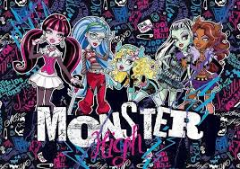
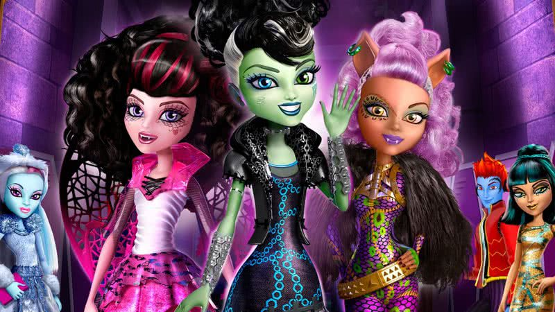

O desenho monster high foi lançado em que ano?
Além das bonecas,quais outros produtos fazem parte da franquia?
Você errou mas vamos continuar. Quantas gerações tem monster high?
qual geração é a mais odiada?

Você errou mas vamos continuar. Como a ideia foi criada?
quais são as personagens principais do desenho?
Quais foram os impactos culturais no comportamento dos jovens?
Quais são os antagonistas?.
Quais são os filmes mais populares da franquia?
O rio à esquerda leva você a uma cachoeira escondida com inscrições antigas que revelam a entrada da
cidade perdida.
Como a franquia evoluiu durante os anos?

Qual evento é comemorado no desenho?
Você chegou no fim do quiz!!